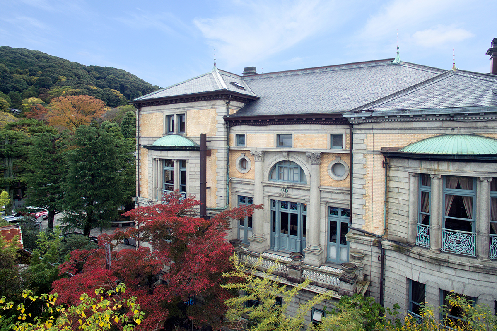
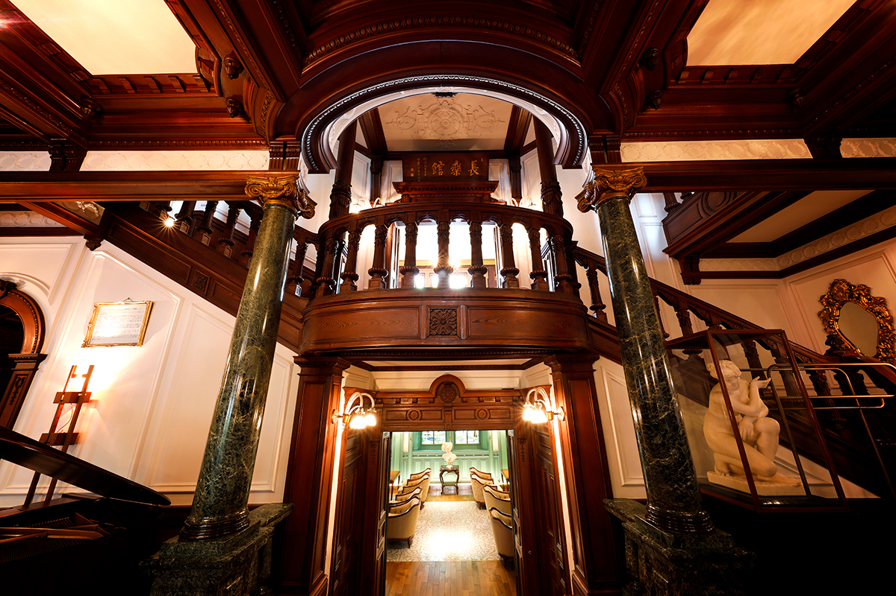
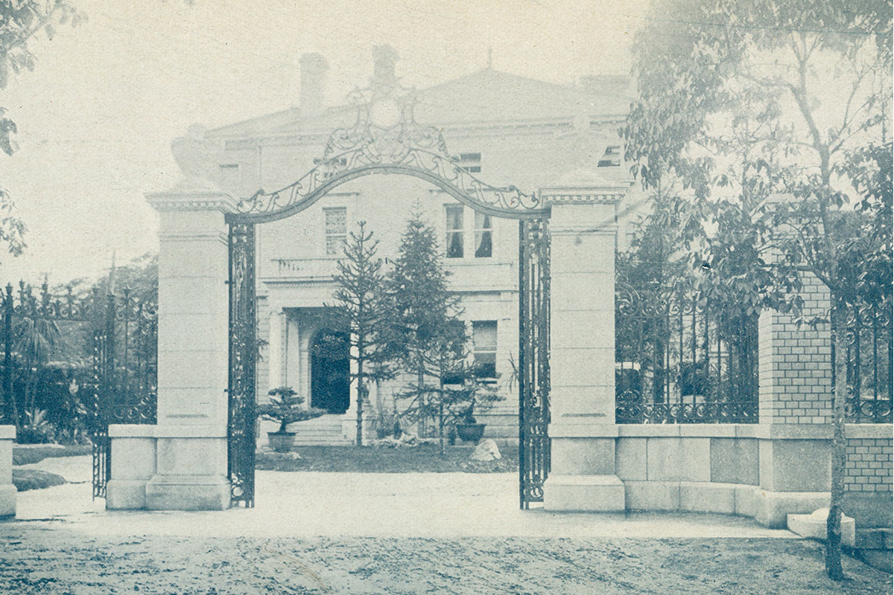
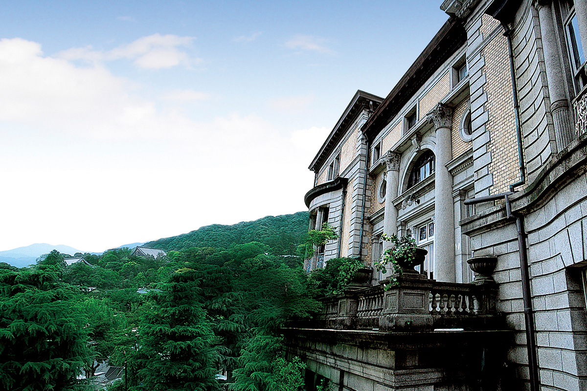
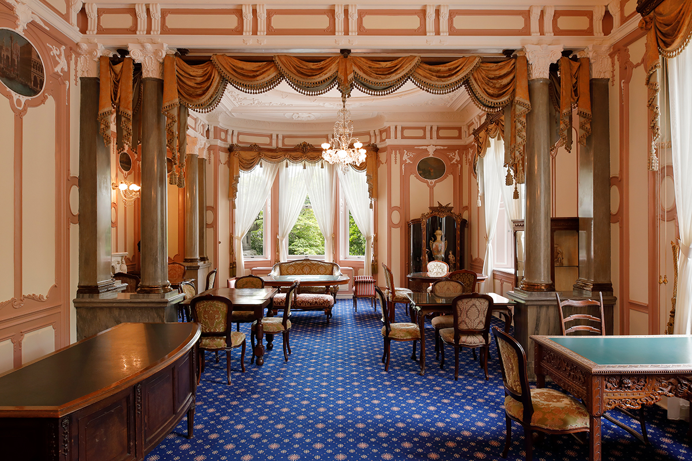
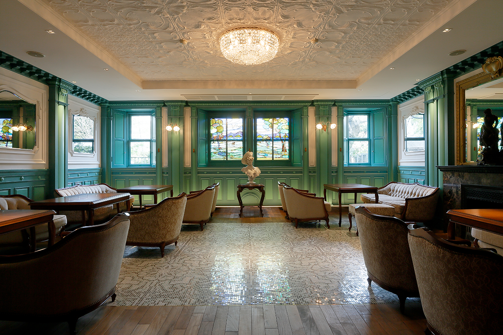
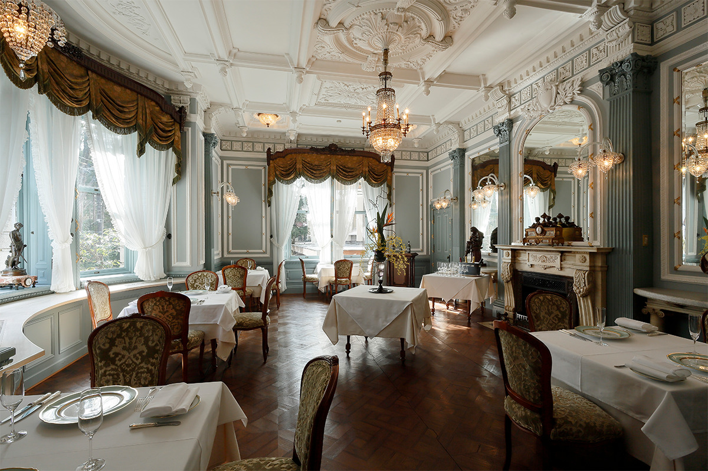
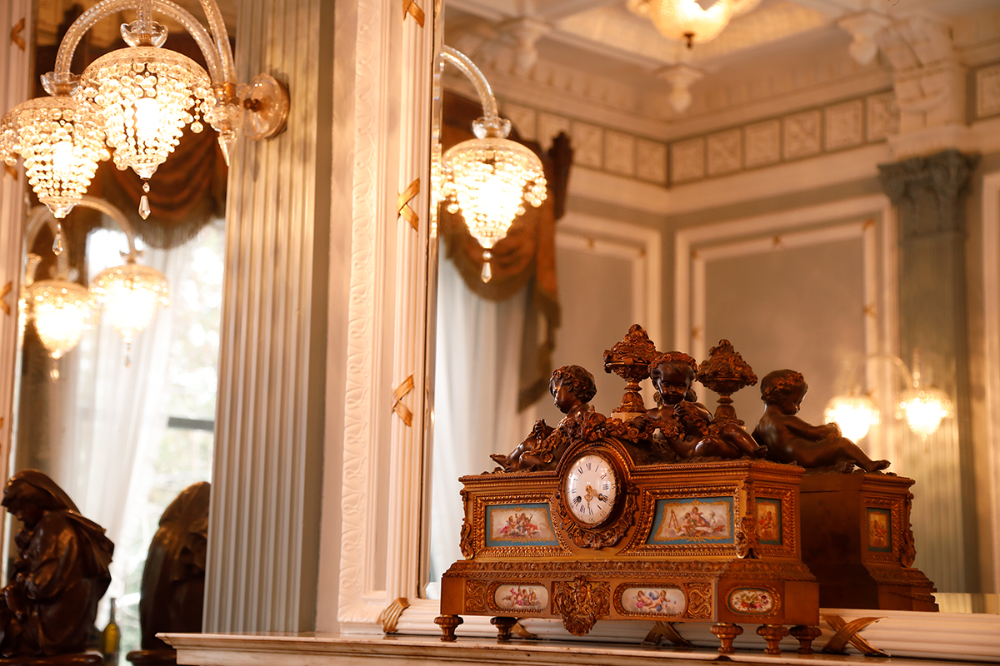
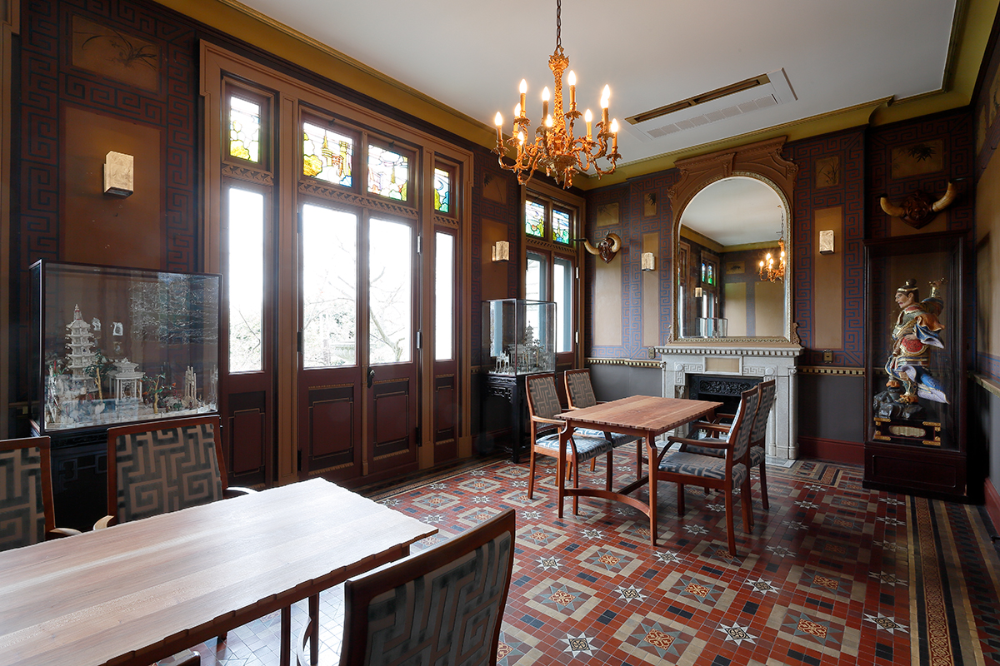
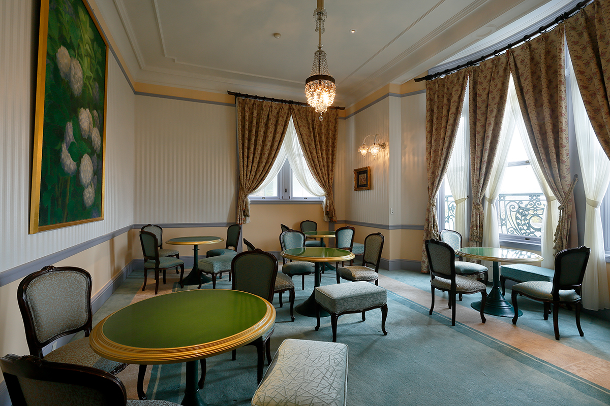

Префектура Киото · Хигасияма · отель
Chourakukan: особняк «табачного короля» эпохи Мэйдзи, где сегодня можно переночевать

В киотском районе Хигасияма стоит особняк, который в 1909 году построил для приёма почётных гостей табачный магнат. Здесь бывали Хиробуми Ито, Сигэнобу Окума и Аритомо Ямагата, а сегодня в этих стенах работает маленький отель с рестораном и кафе.
История
Дом для гостей «табачного короля»
Хигасияма, восточные холмы Киото, славится тем, что смену сезонов здесь видно как нигде в городе. На одном из здешних склонов стоит особняк Chourakukan. Место для него выбирали с одной целью: оно должно было подойти для приёма самых важных гостей.

Выбрал его Китибэй Мураи, предприниматель, которого называли «табачным королём эпохи Мэйдзи». В 1909 году он на собственные деньги построил здесь второй дом, вобравший в себя едва ли не все европейские стили, чтобы принимать японских и иностранных гостей. Имя особняку дал Хиробуми Ито (1841–1909), первый премьер-министр Японии. Он остановился здесь, когда приехал в Киото поклониться могиле Такаёси Кидо (1833–1877), одного из вождей реставрации Мэйдзи. Вид из окна так понравился Ито, что он назвал дом «Тёракукан», то есть «дом долгой радости»: пусть радость здесь длится как можно дольше.
После Ито в особняке побывали многие люди, определявшие свою эпоху. Среди них Сигэнобу Окума (1838–1922) и Аритомо Ямагата (1838–1922), оба занимали пост премьер-министра. Приезжали и иностранцы: британский наследный принц, будущий король Эдуард VIII, и Рокфеллер из США.

Отель
Шесть номеров и виды на четыре сезона
Больше ста лет спустя дом, где когда-то встречали гостей эпохи Мэйдзи, снова принимает гостей. Теперь это отель Chourakukan с французским рестораном, кафе и баром. Номеров всего шесть: это маленькая обёржа для тех, кто ищет уединения. Гостей ждут роскошные общие залы и спокойные номера с продуманно расставленной мебелью из массива дерева.

Из особняка как на ладони видны сакуры и осенние клёны соседнего парка Маруяма, так что смену времён года здесь чувствуешь каждый день. Пешком недалеко и до знаменитых храмов: Киёмидзу-дэра, Кодай-дзи и Тион-ин, поэтому в отель можно заглянуть и по дороге во время прогулки. Наследие старого Киото и красота природы рядом друг с другом, и это сочетание остаётся тем же, что и в год постройки.
Архитектура
Сокровищница стилей

В 1986 году, примерно через 80 лет после постройки, бывший второй дом Китибэя Мураи вместе с большой частью обстановки внесли в список материальных культурных ценностей города Киото. А 9 декабря 2024 года главный корпус стал важной культурной ценностью всей страны.
Это роскошное пространство спроектировал американский архитектор Джеймс Макдональд Гардинер. Он изучал историю искусства и собрал в Chourakukan множество художественных стилей. Причём не в учебном виде: каждый стиль он видоизменил и добавил в него собственную выдумку.
Фасад решён в духе Ренессанса, приёмный зал в стиле рококо, столовая в неоклассическом стиле, а витражи и окна в стиле модерн. Есть и китайская комната с картинами тушью, на которых изображены «четыре благородных растения»: слива, хризантема, орхидея и бамбук. На третьем этаже устроена японская комната в стиле сёин-дзукури. Балкон, выступающий внутрь здания, смелый и вполне американский по духу. Английские, американские, французские, китайские и японские мотивы сплетены здесь вместе, и дом по праву можно назвать сокровищницей стилей.

Каждая комната особняка устроена по-своему, и почти в каждую можно зайти, не останавливаясь в отеле: в кафе, ресторан или на послеобеденный чай.


Курительная комната на втором этаже главного корпуса оформлена в китайском духе. Над входом висит табличка, которую своей рукой написал Хиробуми Ито.


Chourakukan окружён зеленью Хигасиямы, и здесь легко забыть, что вокруг город. Когда-то в этих комнатах проводили время знаменитые люди Японии, члены королевских семей и послы разных стран. Времена изменились, а следы блестящей истории остались, и пожить в них может сегодня любой гость.
Chourakukan
- Адрес
- префектура Киото, город Киото, район Хигасияма, Маруяма-тё, 604
- Телефон
- +81 75-561-0001
- Номера
- 6
- Цены / Вход
- от 42 000 иен на человека за ночь с завтраком, с налогом и сервисным сбором
- Заезд / выезд
- 15:00 / 11:00
- Как добраться
- от станции Киото на машине около 15 минут, от станции Киото-Каварамати линии Ханкю пешком около 15 минут, от станции Гион-Сидзё линии Кэйхан пешком около 10 минут